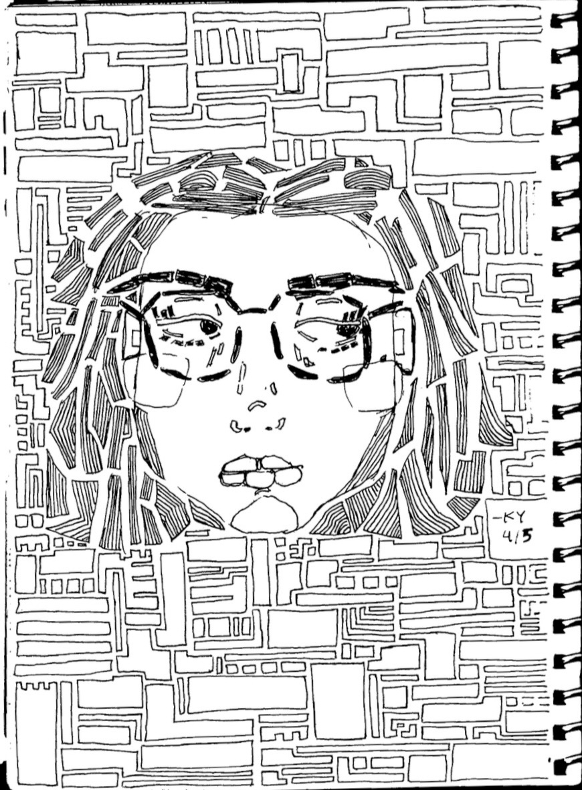
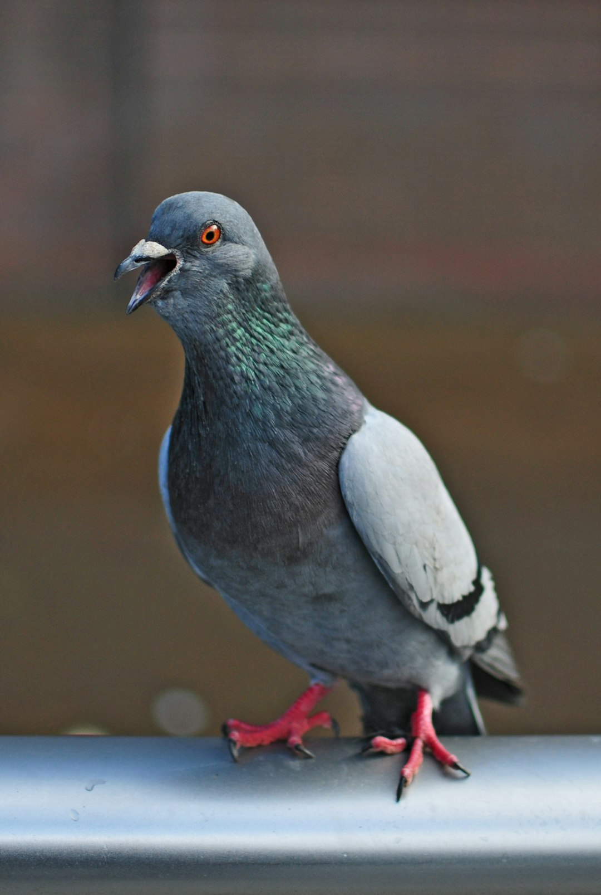
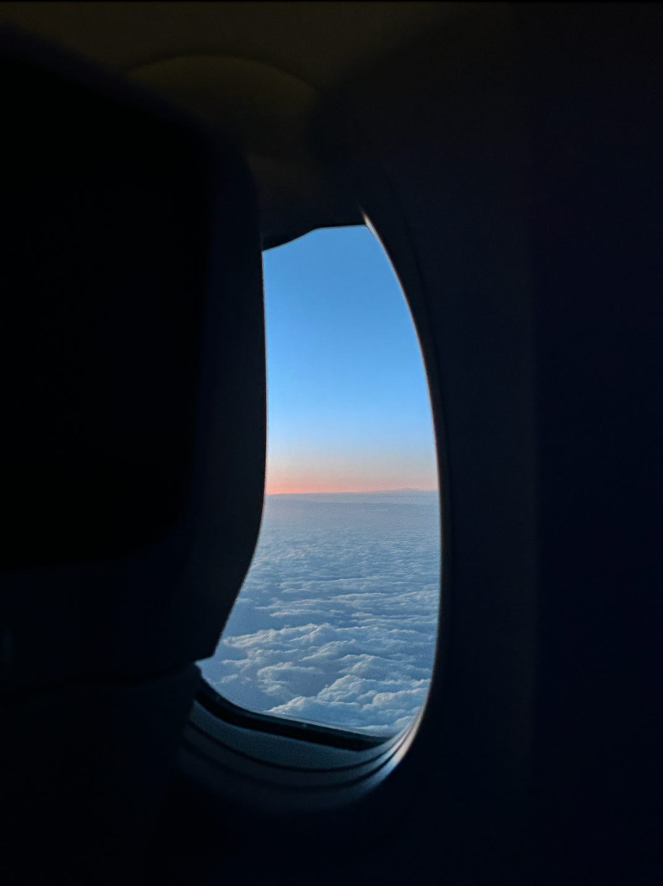

About the site.
What is Bored in NYC?
In short: creativity without decision-making.

a "geometric me" that I made while I should've been working.
I am supposed to be studying for the MCAT right now.
So naturally, I decided to create a website instead.
Bored in NYC is for those moments when you want to do something, but figuring out what that something should be feels too burdensome, too exhausting, too much.
Take the quiz if you want. Browse if you don't. Either way, the goal is pretty simple:
get off your phone.
go somewhere.
do something.
Other things I've made.
Evidence that I avoid my responsibilities.
Some projects that inspired this website. [I don't recommend snooping through the Substack unless you're in a really good place, mentally.]

Writing
a study of the american rock pigeon
A poem I wrote inspired by Mary Oliver's Wild Geese. Written at a PIG (Poetry is Gay) meeting at Dayglow in March 2026.
↗
Art
dead bees can still sting you
I ripped a small picture out of a magazine, glued it to my notebook, and filled in the rest with colored pencils I got from my estranged grandmother when I was 12. The title is an ode to my pole vault team from my freshman year of high school; I have no recollection of the context :P
↗
Writing
clouds
Some prose (I think) about sitting in the middle seat while I avoided reading my book club's book for the thousandth hour. I think I was flying to or from Portland or NYC; it doesn't really matter. Yes the window seater was in the bathroom when I took this picture, don't worry.
↗YOUR TURN.
Tell me what I’m missing.
Very likely that you know something I don't. If you have a weird little place, activity, class, shop, or thing to do in NYC, please send it my way!!